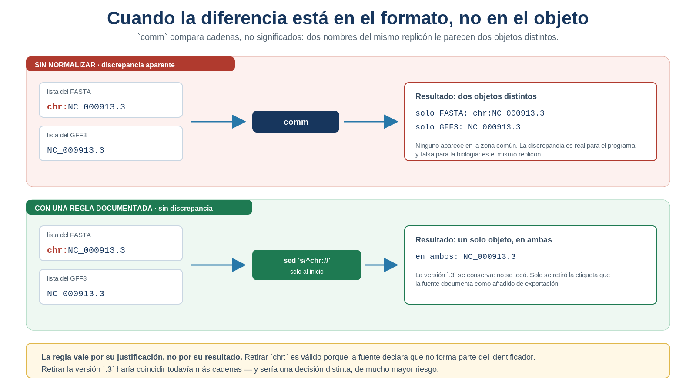
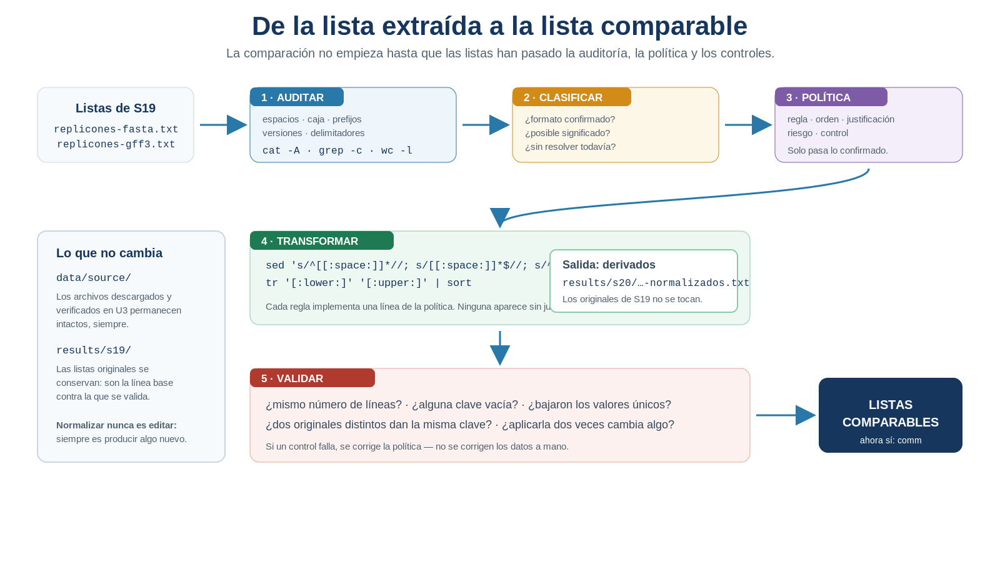
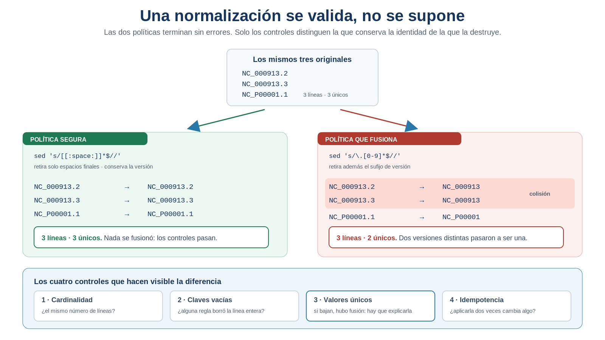

S20 — Normalizar: preparar los datos para compararlos
Antes de clase leerás las secciones marcadas como indispensables y harás un primer intento con las listas reales que generaste en S19: identificarás qué diferencias textuales podrían impedir una comparación justa y decidirás cuáles transformaciones parecen justificadas. Durante el taller construirás versiones normalizadas sin modificar los archivos originales, compararás el resultado antes y después de normalizar y validarás que ninguna transformación haya eliminado o fusionado objetos biológicos indebidamente. Después integrarás en doc/protocolo.md la sección Normalización y datos derivados.
El primer intento es formativo: no se evalúa que adivines una receta, sino que distingas una diferencia de formato de una diferencia que podría tener significado biológico.
Ficha del módulo
| Elemento | Descripción |
|---|---|
| Sesión | S20, 2 horas |
| Unidad | U4. Procesamiento y exploración de datos genómicos |
| Competencia principal | D. Análisis y exploración de datos genómicos |
| Competencias integradas | A. Documentación reproducible; B. Entorno Unix; C. Manejo de datos biológicos |
| Propósito | Transformar representaciones equivalentes en una forma consistente y reproducible antes de compararlas, justificando cada transformación y verificando que no se pierda ni se fusione información biológica |
| Consulta previa del Plan | S20 · Sustituciones y transformaciones (sed, tr); este módulo lo sustituye como lectura autocontenida |
| Continuidad | S18 seleccionó la evidencia; S19 identificó el objeto; S20 la vuelve comparable |
| Lectura indispensable | Secciones 1–7 de este módulo (~60 min); las secciones 8 y 9 son de consulta |
| Lectura de consulta | Manuales de sed y tr; documentación de identificadores de tu fuente de datos; Buffalo (2015), Cap. 7 |
| Primer intento | Práctica 1: auditoría de heterogeneidad y política preliminar, 20 min |
| Evidencia | Listas originales y normalizadas, política justificada, validación de cardinalidad y colisiones, comparación antes/después, y el primer derivado en data/processed/ |
| Tarea numerada | Ninguna nueva. La evidencia se incorpora a doc/protocolo.md |
Normalizar no significa “hacer que todo coincida”. Significa eliminar únicamente las diferencias de representación que se ha demostrado que no cambian la identidad del objeto. Una normalización que fuerza una coincidencia puede ocultar una diferencia biológica o de versión.
Relación con lo que ya sabes
S19 S20
Reconocer de qué objeto habla → Hacer que dos nombres del mismo objeto se reconozcan
"este identificador lo nombra" "estas dos formas de escribirlo son la misma"En S19 comprobaste que el FASTA y el GFF3 nombran a los mismos replicones. Que ambos vengan del mismo ensamblado y del mismo productor hace probable que compartan convención, pero no lo garantiza: podrían diferir en versión o en formato. Por eso se audita. Y porque comm no sabe qué es un replicón: solo compara caracteres, y estas cuatro cadenas son para él cuatro objetos distintos.
NC_000913.3 nc_000913.3 chr:NC_000913.3 NC_000913Para ti, algunas designan lo mismo. Pero no todas: el sufijo .3 es una versión concreta de la secuencia, y esa diferencia sí importa.
| Habilidad que ya tienes | Dónde la aprendiste | Qué cambia en S20 |
|---|---|---|
| Seleccionar registros válidos | S18 | La selección ya ocurrió; ahora se prepara su representación |
| Recuperar identificadores | S19 | Se conservan como valores originales y se genera una segunda representación |
| Construir listas ordenadas | S13, S19 | Las listas necesitan además una política de representación común |
Comparar con comm |
S19 | La comparación se hace dos veces: sobre los originales y sobre las claves |
| Verificar resultados | S13, S18, S19 | Se verifica también que la transformación no cambie la cardinalidad ni fusione objetos |
| Conservar los datos originales | U1, U3 | Ya producías resultados; hoy produces tu primer dato derivado reutilizable como entrada de otro análisis |
Lo nuevo de hoy no es “editar texto”. Es una operación científica que hasta ahora no habías hecho, y que se sitúa exactamente entre las otras dos:
extraer ≠ normalizar ≠ comparar
qué fragmento bajo qué forma qué coincide
es el dato se compara y qué noTu lugar en el ciclo de la evidencia
Las seis sesiones que cierran la unidad no enseñan seis herramientas: enseñan los seis pasos por los que una observación se convierte en evidencia científica. Hoy trabajas el tercero.
S18 SELECCIONAR la evidencia correcta ✔ resuelto
S19 IDENTIFICAR el objeto biológico correcto ✔ resuelto
▶ S20 NORMALIZAR la evidencia para compararla ← estás aquí
S21 CONFRONTAR con una fuente ajena
S22 CUANTIFICAR e interpretar
S23 INTEGRAR el ciclo completo, reproducibleSabes qué líneas cuentan y qué objeto nombra cada una. Falta una condición previa que casi siempre se da por supuesta: que dos fuentes escriban ese nombre de la misma manera. Sin ella, comparar produce diferencias que no existen.
Dónde estás en la investigación
| Pregunta de la investigación | En S20 |
|---|---|
| ¿Cuáles son los identificadores de los replicones? | ✔ Resuelta en S19 |
| ¿Coinciden entre FASTA y GFF3? | ✔ Resuelta en S19; hoy se comprueba si la coincidencia dependía del formato |
| ¿Las diferencias observadas son textuales o biológicas? | ✔ Se resuelve hoy |
| ¿Qué representación permite comparar sin cambiar la identidad? | ✔ Se resuelve hoy |
| ¿La transformación perdió o fusionó información? | ✔ Se valida hoy |
| ¿Puedo producir una tabla derivada del genoma, propia y reutilizable? | ✔ Primera respuesta hoy (se amplía en S22) |
| ¿Coinciden mis identificadores con los de otra base de datos? | ☐ S21 |
| ¿Cuántos genes hay por replicón y por cadena? | ☐ S22 |
Vienen de dos archivos descargados juntos, así que es probable que ya usen la misma convención. S20 no va a inventar diferencias: primero auditas, y si resultan comparables, ese es el resultado. Decidir con evidencia que una lista se conserva intacta también es normalizar.
Resultados de aprendizaje
Al finalizar la sesión podrás:
- Explicar por qué dos representaciones textuales distintas pueden designar el mismo objeto, y por qué dos parecidas pueden designar objetos distintos.
- Distinguir normalizar de extraer, corregir, filtrar, deduplicar y comparar.
- Auditar una lista real para detectar espacios, caja, prefijos, sufijos de versión y delimitadores.
- Formular una política de normalización explícita antes de transformar los datos.
- Clasificar una transformación como conservadora, dependiente del contexto o potencialmente destructiva.
- Aplicar sustituciones acotadas con
sedy conversiones contrcuando respondan a una necesidad demostrada. - Conservar por separado el identificador original y la clave normalizada.
- Validar que la transformación preserve los registros y detectar colisiones.
- Comparar las listas antes y después de normalizar e interpretar qué discrepancias eran de formato.
- Producir un dato derivado en
data/processed/con su trazabilidad, sin alterar jamásdata/source/.
Lista de verificación previa
Antes del taller comprueba que tienes:
No corrijas identificadores a mano en un documento. Con tres replicones parece rápido, pero no deja una regla verificable ni puede repetirse sobre otro genoma. Si algo merece cambiarse, merece una regla.
Ruta de S20
| Momento | Qué hacer | Tiempo estimado |
|---|---|---|
| Antes de clase | Leer las secciones 1–7; resolver la Práctica 1 | 60 + 20 min |
| Taller (1.ª hora) | Auditar las listas, definir la política y construir las claves (Prácticas 2–4) | 60 min |
| Taller (2.ª hora) | Validar cardinalidad y colisiones; comparar antes/después (Prácticas 5–6) | 60 min |
| Después del taller | Producir el derivado en data/processed/ (Práctica 7) y redactar la sección S20 |
60 min |
Las secciones 1–7 son indispensables; las secciones 8 y 9 son de consulta y se aplican en la Práctica 7. La sección 10 guía la documentación posterior.
1. Igualdad textual e igualdad biológica [Indispensable]
Al terminar S19 tenías dos listas y parecía que solo faltaba compararlas. Pero una comparación textual responde una pregunta más estrecha de lo que suele suponerse:
¿Estas dos cadenas tienen los mismos caracteres en el mismo orden?
Y esa no es la pregunta que te interesa:
¿Estas dos cadenas representan el mismo objeto biológico?
La distancia entre ambas es la razón por la que normalizar forma parte del método científico y no de la limpieza cosmética.
Entre dos cadenas caben tres situaciones: que sean idénticas, que difieran solo en su forma, o que se parezcan mucho y aun así designen objetos distintos. La segunda pide normalizar; la tercera lo prohíbe.
Mira la segunda de cerca. Si una lista trae chr:NC_000913.3 y la otra NC_000913.3, y la fuente documenta que chr: es una etiqueta de exportación, la comparación literal produce un falso positivo de diferencia: dos objetos distintos donde hay uno.

Figura 20.1. Una diferencia de formato puede convertirse en una diferencia aparente entre conjuntos. La normalización elimina ese falso positivo únicamente cuando la regla está justificada. Elaboración propia.
IDEA CLAVE. La normalización no descubre por sí sola qué cadenas son equivalentes: la equivalencia se justifica con la convención de la fuente y la pregunta científica. Fíjate en el recuadro inferior de la figura, porque contiene toda la sesión: retirar la versión haría coincidir todavía más cadenas y sería una decisión mucho peor. Un aumento de coincidencias no valida por sí solo una regla; lo que la respalda es la documentación de la fuente y los controles de la Sección 6.
Práctica 1 — ¿Mis listas ya son comparables? (antes de clase, primer intento)
Pregunta biológica. ¿Las listas de replicones de mi FASTA y mi GFF3 nombran a los objetos con la misma convención textual, o hay alguna diferencia que impediría compararlas correctamente?
Objetivo. Examinar la forma de tus datos antes de proponer ninguna transformación.
Antes de clase (primer intento). En doc/s20-primer-intento.md:
- Recupera las listas reales. Anota sus rutas, su origen y cuántas líneas tiene cada una.
- Inspecciona. Copia tres identificadores de cada lista, sin modificarlos.
- Describe la forma. Para cada lista: caja, prefijos, sufijo de versión, espacios en los extremos, otros delimitadores.
- Formula una hipótesis. Elige una: ya tienen la misma convención · hay al menos una diferencia puramente textual · no puedo decidir todavía si es textual o biológica.
- Propón, sin ejecutar, una política preliminar y señala cuál de tus transformaciones podría fusionar identificadores distintos.
- Predice. ¿Esperas que la comparación cambie después de normalizar? ¿Por qué?
Durante el taller. Contrastarás esta propuesta con una auditoría reproducible y la corregirás antes de generar ningún archivo.
Después del taller. Conservarás la versión inicial y la decisión final en el protocolo.
Criterio de logro: describes propiedades observables de tus listas y distingues con claridad una hipótesis de una transformación ya justificada.
2. Normalizar no es limpiar ni corregir [Indispensable]
En lenguaje cotidiano, “limpiar datos” significa muchas cosas a la vez: quitar lo que molesta, corregir errores, borrar duplicados, renombrar. En un análisis reproducible cada una responde una pregunta distinta y tiene consecuencias distintas.
| Operación | Pregunta que responde | Ejemplo |
|---|---|---|
| Extraer | ¿Qué fragmento es el dato? | Recuperar la accesión de un encabezado FASTA (S19) |
| Normalizar | ¿Bajo qué representación común lo comparo? | Retirar un prefijo documental confirmado |
| Corregir | ¿El valor original era erróneo? | Sustituir una accesión equivocada tras comprobarla en la fuente |
| Filtrar | ¿Qué elementos entran en el análisis? | Excluir replicones no cromosómicos según un criterio biológico |
| Deduplicar | ¿Qué apariciones son del mismo valor? | sort -u sobre una lista |
| Comparar | ¿Qué valores están en uno, en otro o en ambos? | comm sobre dos listas ya comparables |
No llames “normalización” a borrar lo que no encaja. Si un identificador no cumple la forma esperada, queda registrado como caso no resuelto; no desaparece en silencio.
2.1 El original y la clave
Una estrategia segura conserva siempre dos valores:
identificador_original clave_normalizada
chr:NC_000913.3 NC_000913.3El primero permite volver a la fuente; el segundo sirve para comparar. La separación vuelve visible la transformación y permite detectar si dos originales distintos acaban produciendo la misma clave —lo que en la Sección 6 llamarás colisión—.
IDEA CLAVE. La clave normalizada no sustituye al identificador oficial: es una representación analítica, construida para una comparación concreta y válida solo mientras esa comparación lo sea.
3. Antes de transformar: auditar [Indispensable]
No se elige una herramienta hasta demostrar qué problema existe. La auditoría contesta preguntas concretas —¿hay líneas vacías?, ¿espacios invisibles en los extremos?, ¿la misma caja en todas?, ¿un prefijo sistemático?, ¿versión en todas?— y se limita a describir: detectar un patrón no autoriza a modificarlo.
3.1 Ver los caracteres que no se ven
cat -A results/s19/replicones-fasta.txt
cat -A results/s19/replicones-gff3.txt¿Qué hace? Muestra los caracteres invisibles: $ marca el final de línea, ^I un tabulador.
¿Por qué aparece aquí? Porque un espacio final o un retorno de carro hace que dos identificadores visualmente idénticos no coincidan: es la causa de discrepancia más difícil de ver a simple vista.
Conviene también establecer la línea base numérica, que será la referencia de toda la validación posterior:
wc -l results/s19/replicones-fasta.txt
sort -u results/s19/replicones-fasta.txt | wc -lEl primero cuenta registros; el segundo, valores textuales distintos. Son los dos números que la normalización deberá preservar o explicar.
3.2 Preguntar por rasgos, no por contenidos
Una auditoría no necesita conocer de antemano los identificadores. Puede preguntar por su forma:
grep -Ec '^[a-z]' results/s19/replicones-fasta.txt # ¿alguno empieza en minúscula?
grep -Ec ':' results/s19/replicones-fasta.txt # ¿hay prefijos con dos puntos?
grep -Ec '\.[0-9]+$' results/s19/replicones-fasta.txt # ¿cuántos llevan versión?
grep -Ec '^[[:space:]]|[[:space:]]$' results/s19/replicones-fasta.txt # ¿hay espacios en los extremos?Son las clases y las anclas de S18 al servicio de una pregunta nueva: no qué dice el archivo, sino cómo está escrito.
IDEA CLAVE. Toda regla de normalización nace de un problema observado. Si no puedes señalar la línea concreta que la motiva, esa regla no debería existir.
Práctica 2 — Inventario reproducible de diferencias (durante el taller)
Pregunta biológica. ¿Qué propiedades textuales de mis identificadores podrían impedir una comparación válida entre las listas?
Objetivo. Convertir una impresión visual en una auditoría reproducible.
Pasos.
Conserva la línea base. Registra líneas y valores únicos de cada lista: son la referencia de la Práctica 5.
Haz visibles los caracteres. Revisa ambas listas con
cat -A.Mide cada rasgo con las consultas de la Sección 3.2, una por fila de la tabla. No elimines nada todavía.
Construye la tabla:
Rasgo auditado FASTA GFF3 ¿Impide comparar? ¿Conozco su significado? Líneas vacías … … … … Espacios extremos … … … … Minúsculas … … … … Prefijo detectado … … … … Sufijo de versión … … … … Decide si hace falta normalizar. Si las listas ya usan la misma convención, escríbelo y justifícalo. No inventes una transformación.
Guarda la auditoría en
results/s20/auditoria-normalizacion.md.
Producto esperado. Una caracterización verificable de la heterogeneidad de tus listas reales.
Criterio de logro: ninguna transformación aparece en tu tabla sin un problema observado que la justifique.
4. Diseñar una política de normalización [Indispensable]
Una política de normalización es una lista ordenada de reglas. Cada columna de la tabla siguiente es una pregunta que ninguna regla puede dejar sin responder:
| Orden | Problema detectado | Regla | Justificación | Riesgo | Validación |
|---|---|---|---|---|---|
| 1 | Espacios finales | Eliminar espacios en los extremos | No forman parte del identificador | Bajo | Misma cardinalidad |
| 2 | Prefijo chr: en una fuente |
Retirarlo solo al inicio | La fuente lo documenta como etiqueta de exportación | Medio | Revisar colisiones |
| 3 | Diferencias de caja | Convertir a mayúsculas | Solo si la convención declara que no distingue caja | Medio | Conservar original y revisar colisiones |
| — | Sufijo de versión .n |
Conservar | Distingue versiones de la secuencia | Alto si se elimina | No aplicar |
4.1 Tres niveles de riesgo
A · Conservadoras. Cambian la presentación sin tocar la identidad —espacios en los extremos, finales de línea incompatibles—, aunque igualmente se comprueban. Una línea vacía no entra aquí: primero hay que averiguar si es un artefacto del flujo o el rastro de un identificador que faltaba.
B · Dependientes del contexto. Válidas solo si la convención de la fuente las respalda: convertir la caja, retirar prefijos, cambiar delimitadores, rellenar códigos con ceros.
C · Potencialmente destructivas. Pueden fusionar objetos o esconder diferencias reales: eliminar versiones, truncar identificadores, quedarse con una parte que no está garantizada como única, o borrar los valores que no cumplen el patrón esperado.
NC_000913.2 y NC_000913.3 comparten accesión base pero son versiones distintas de la secuencia. Eliminar el sufijo puede tener sentido para una pregunta sobre el linaje de la accesión; es incorrecto para comprobar que tu FASTA y tu GFF3 pertenecen al mismo ensamblado, que es justamente la pregunta de S19.
IDEA CLAVE. La misma regla puede ser correcta para una pregunta e inaceptable para otra. Por eso una política se escribe junto a la pregunta que la justifica, y no se hereda de otro proyecto.
Práctica 3 — Mi contrato de normalización (durante el taller)
Pregunta biológica. ¿Qué representación común permitirá comparar mis listas sin cambiar la identidad de los replicones?
Objetivo. Definir la estrategia antes de escribir un solo comando.
Pasos.
- Parte de la auditoría. Copia únicamente los rasgos que realmente encontraste.
- Consulta la procedencia. Revisa la fuente del FASTA y del GFF3 registrada en U3 y S19.
- Define la forma canónica. Escribe un ejemplo de cómo deberá verse una clave final.
- Clasifica cada regla como conservadora, dependiente del contexto o potencialmente destructiva.
- Justifica cada transformación. Una regla sin justificación no se ejecuta.
- Define el orden y explica por qué una regla debe ir antes que otra.
- Establece los controles con los que comprobarás cada regla (Sección 6).
- Guarda la política en
results/s20/politica-normalizacion.md.
Producto esperado. Una política que otra persona pueda leer y aplicar sin adivinar tus decisiones.
Criterio de logro: tu política incluye al menos una regla explícitamente descartada por riesgo o por falta de evidencia.
5. Aplicar las transformaciones justificadas [Indispensable]
Las herramientas aparecen ahora, cuando ya existen el problema y la política.
Sintaxis mínima — sed 's///'
sed 's/patrón/reemplazo/' archivo¿Qué hace? Sustituye la primera coincidencia del patrón en cada línea y escribe el resultado en la salida; no modifica el archivo.
¿Por qué aparece en esta sesión? Porque algunas convenciones añaden texto sistemático, y necesitas una clave común sin tocar el original.
sed 's/^chr://' # retirar un prefijo solo si está al inicio
sed 's/^[[:space:]]*//; s/[[:space:]]*$//' # retirar espacios en los extremosFíjate en las anclas de S18 con un uso nuevo: s/chr:// eliminaría esa cadena en cualquier posición, mientras que s/^chr:// declara que solo cuenta como prefijo al principio. Sobre un identificador como NC_chr:001, esa diferencia es la que separa normalizar de corromper.
sed no sabe que chr: es un prefijo: aplica la regla que escribiste. La validez está en tu política, no en la herramienta.
Sintaxis mínima — tr
tr '[:lower:]' '[:upper:]' # convertir la caja
tr -d '\r' # eliminar un carácter (aquí, retorno de carro de Windows)
tr -s ' ' # comprimir repeticiones consecutivas en una sola¿Qué hace? Traduce, elimina o comprime caracteres sueltos, sin entender patrones.
¿Por qué aparece en esta sesión? Porque parte de la heterogeneidad no está en el texto sino en los caracteres: la caja, un retorno de carro heredado de otro sistema, espacios repetidos. sed trabaja con patrones; tr, con caracteres. Y vale aquí la misma advertencia de antes: que una conversión de caja haga coincidir dos cadenas no demuestra que deba aplicarse.
5.1 De la política al comando
sed 's/^[[:space:]]*//; s/[[:space:]]*$//; s/^chr://' \
results/s19/replicones-fasta.txt \
| tr '[:lower:]' '[:upper:]' \
| sort \
> results/s20/replicones-fasta-normalizados.txtEs una plantilla estructural, no una receta: si tu auditoría solo encontró espacios finales, tu comando tendrá una sola sustitución.

Figura 20.2. De la lista extraída a la lista comparable. Los datos de origen nunca se modifican: cada paso produce algo nuevo, y la comparación solo empieza cuando los controles se han superado. Elaboración propia.
5.2 La muestra de trazabilidad
La separación entre original y clave (Sección 2.1) se materializa en una muestra pequeña:
origen identificador_original clave_normalizada
FASTA chr:NC_000913.3 NC_000913.3
GFF3 NC_000913.3 NC_000913.3Se llena mirando la entrada y la salida del comando, nunca escribiendo las claves a mano: su función es auditar la transformación, no sustituirla.
Práctica 4 — Construir las listas comparables (durante el taller)
Pregunta biológica. ¿Qué claves representan de forma consistente a mis replicones sin perder el vínculo con sus identificadores originales?
Objetivo. Aplicar la política aprobada y producir derivados reproducibles.
Parte A — Escribir la regla
- Crea el directorio:
mkdir -p results/s20. - Escribe primero la regla como frase. Por ejemplo: “eliminar espacios extremos; conservar la versión; no modificar mayúsculas”.
- Construye el comando que implementa exactamente esa frase, y solo esa.
- Prueba en pantalla. Ejecuta sin redirección: con pocos replicones puedes leer la salida entera.
Parte B — Generar los derivados
- Genera los dos archivos
results/s20/replicones-fasta-normalizados.txtyresults/s20/replicones-gff3-normalizados.txt. - Conserva los originales de S19. No los sobrescribas: son tu línea base.
- Registra una muestra original → clave de cada fuente.
- Comprueba la forma final. Todas las claves deben obedecer la representación canónica que definiste.
- Si no hacía falta transformar, genera igualmente el derivado con la política vacía o copiando de forma reproducible, y documenta: “la auditoría mostró que las listas ya eran comparables”.
Producto esperado. Dos listas derivadas y la política exacta que las produjo.
Criterio de logro: cada carácter modificado puede rastrearse hasta una regla de la política, y ningún archivo de S19 ni de data/source/ fue alterado.
6. Validar que no se perdió información [Indispensable]
Una transformación que termina sin errores no está validada. Estos cuatro controles son el mínimo que aplicarás en S20; en esta sesión ninguno es opcional, y en cualquier otra transformación tendrás que preguntarte cuáles hacen falta.
1 · Cardinalidad. Si normalizar no incluía filtrar, el número de líneas debe conservarse.
wc -l results/s19/replicones-fasta.txt
wc -l results/s20/replicones-fasta-normalizados.txt2 · Claves vacías. El conteo debe ser cero. Si no lo es, no la borres: averigua primero de dónde sale. Puede ser una regla que se comió la línea entera, un registro incompleto o un identificador que ya faltaba en el archivo de origen —y ese último caso es un hallazgo, no un estorbo—. Solo se elimina cuando se demuestra que es un artefacto sin significado.
grep -Ec '^$' results/s20/replicones-fasta-normalizados.txt3 · Colisiones. Dos originales distintos que producen la misma clave. Se detectan comparando los valores únicos antes y después; una disminución no es automáticamente incorrecta, pero exige identificar qué valores se fusionaron y justificar por qué son el mismo objeto para tu pregunta.
sort -u results/s19/replicones-fasta.txt | wc -l
sort -u results/s20/replicones-fasta-normalizados.txt | wc -l4 · Idempotencia. Aplicar la política completa dos veces debe dar lo mismo que aplicarla una. No basta con reaplicar una de sus reglas: hay que reejecutar la misma tubería, entera, sobre el archivo ya normalizado.
# la misma tubería de la Sección 5.1, ahora sobre su propia salida
sed 's/^[[:space:]]*//; s/[[:space:]]*$//; s/^chr://' \
results/s20/replicones-fasta-normalizados.txt \
| tr '[:lower:]' '[:upper:]' \
| sort > results/s20/segunda-pasada.txt
comm -3 results/s20/replicones-fasta-normalizados.txt results/s20/segunda-pasada.txtcomm -3 muestra solo las diferencias, así que una salida vacía significa que los dos archivos son idénticos: la política es idempotente. Cualquier línea que aparezca señala una regla que sigue transformando lo que ya había transformado, y por tanto no define una forma final estable.

Figura 20.3. Las dos políticas de la figura terminan sin errores y producen listas de aspecto correcto. Solo los controles distinguen la que conserva la identidad de la que la destruye. Elaboración propia.
IDEA CLAVE. Validar una normalización no es preguntarse “¿se ve bien?”, sino responder esas cuatro preguntas con números. Las dos políticas de la figura terminan sin errores; solo los controles las distinguen.
Práctica 5 — Auditoría de pérdida y colisiones (durante el taller)
Pregunta biológica. ¿La representación normalizada conserva todos los replicones y mantiene separados los objetos que deben seguir siendo distintos?
Objetivo. Demostrar con números que la transformación es segura para la comparación planeada.
Pasos. Para cada lista, partiendo de la línea base que ya registraste en la Práctica 2:
- Mide líneas y valores únicos después de normalizar y compáralos con esa línea base.
- Cuenta claves vacías.
- Comprueba que la lista final esté ordenada (
sort -cfalla si no lo está). - Reaplica la política y comprueba la idempotencia.
- Si disminuyeron los valores únicos: identifica los originales que convergieron, explica qué regla los fusionó, decide si la fusión es válida para tu pregunta y revierte la regla si no puedes justificarla.
- Completa la tabla:
Sea cual sea tu genoma, la idempotencia debe cumplirse siempre: reaplicar la política a una lista ya normalizada tiene que devolver exactamente lo mismo. Si cambia, tu política no es una función, es una secuencia de parches. Y sort -c o pasa o falla: no hay término medio.
El que sí depende de tus datos es el recuento de valores únicos. Que disminuya no significa automáticamente que la normalización esté mal: significa que dos identificadores convergieron, y tú tienes que decidir si esa fusión es legítima para tu pregunta. Lo que no vale es no mirarlo. Una pérdida justificada y documentada es un resultado; una pérdida no advertida es un error que aparecerá en S21 disfrazado de discrepancia entre fuentes.
| Control | FASTA | GFF3 | Resultado esperado | Decisión |
|---|---|---|---|---|
| Líneas antes | … | … | Línea base | — |
| Líneas después | … | … | Igual, si no hubo filtrado | … |
| Claves vacías | … | … | 0 | … |
| Únicos antes | … | … | Línea base | — |
| Únicos después | … | … | Igual, o diferencia explicada | … |
| Idempotente | sí/no | sí/no | sí | … |
Producto esperado. Evidencia cuantitativa de que la normalización no perdió información de forma silenciosa.
Criterio de logro: cualquier cambio de cardinalidad o de unicidad queda explicado por identificadores concretos, no por una frase general.
7. Comparar antes y después [Indispensable]
Ahora sí puedes volver a comm, y lo harás dos veces: cada comparación responde una pregunta distinta.
# Antes: ¿qué diferencias textuales había entre las representaciones originales?
comm -3 results/s19/replicones-fasta.txt results/s19/replicones-gff3.txt
# Después: retiradas solo las diferencias justificadas, ¿qué discrepancias permanecen?
comm -3 results/s20/replicones-fasta-normalizados.txt results/s20/replicones-gff3-normalizados.txt| Resultado | Interpretación posible |
|---|---|
| Había diferencias y desaparecen | Eran de representación, cubiertas por la política |
| Persisten las mismas | No dependen de las reglas aplicadas; requieren investigación |
| Quedan menos, pero no cero | Parte era formato; el resto puede ser versión, cobertura o procedencia |
| Aparecen coincidencias nuevas sospechosas | La normalización pudo ser demasiado agresiva: revisa colisiones |
| No había diferencias desde el inicio | Las listas ya eran comparables; no se justificaba transformar |
“Más coincidencias” no equivale a “mejor resultado”. Una transformación puede aumentar artificialmente la coincidencia borrando justo la información que distinguía dos objetos.
Práctica 6 — ¿Qué diferencias eran solo de formato? (durante el taller)
Pregunta biológica. ¿Las discrepancias entre mis listas reflejan replicones realmente distintos o solo convenciones de escritura?
Objetivo. Separar las discrepancias textuales de las que requieren interpretación biológica.
Pasos.
Ejecuta
comm -3sobre las listas originales y cuenta las líneas discrepantes.Ejecuta
comm -3sobre las normalizadas y cuenta las que quedan.Clasifica cada cambio: resuelto por espacios · resuelto por prefijo documentado · resuelto por caja · no resuelto · coincidencia nueva sospechosa de colisión.
Construye la tabla:
Identificador FASTA Identificador GFF3 Clave comparable Antes Después Interpretación … … … iguales/distintos iguales/distintos … Responde, con la tabla de interpretación de la Sección 7 delante: ¿describen ambos archivos el mismo conjunto de replicones? ¿Qué diferencias permanecen y de qué tipo son?
Escribe las dos declaraciones: puedo afirmar … / todavía no puedo afirmar …
Producto esperado. Una comparación antes/después con la explicación de cada diferencia eliminada o persistente.
Criterio de logro: no interpretas como evidencia una coincidencia producida por una transformación hasta haber descartado que sea una colisión.
8. La misma regla, distintas preguntas [Consulta]
No existe una normalización correcta en abstracto: una misma regla puede ser necesaria para una pregunta e inaceptable para la siguiente.
| Pregunta | ¿Qué hacer con la versión .n? |
Por qué |
|---|---|---|
| ¿FASTA y GFF3 son del mismo ensamblado? | Conservarla | Si una lista trae .2 y la otra .3, la discrepancia es justamente el hallazgo |
| ¿Estas accesiones son del mismo linaje de registro? | Puede compararse la base, en una columna aparte | Se conserva el original, se reportan las versiones y no se concluye identidad de secuencia |
| ¿Dos exportaciones usan el mismo prefijo local? | Irrelevante; el prefijo sí puede retirarse | Solo si la documentación confirma que es presentación |
¿nc_000913.3 y NC_000913.3 son el mismo objeto? |
Irrelevante; la caja puede uniformarse | Solo si la fuente declara que el identificador no distingue caja |
IDEA CLAVE. No hay listas “normalizadas para siempre”. Hay una representación normalizada para una comparación, bajo una política y una pregunta que quedaron documentadas.
9. Dónde vive una clave normalizada [Consulta]
Tus listas normalizadas están en results/s20/, junto a los conteos y las comparaciones. Pero una clave normalizada no es un resultado: es un dato de entrada para lo que viene, y el curso guarda esas dos cosas en sitios distintos.
| Carpeta | Qué contiene | Regla |
|---|---|---|
data/source/ |
Lo que descargaste y verificaste en U3 | Nunca se modifica |
data/processed/ |
Datos derivados, que otro análisis usará como entrada | Se regenera con un comando documentado |
results/ |
Salidas de un análisis concreto: conteos, listas, comparaciones | Se regenera; no alimenta otro análisis |
Aplicar tu política a la anotación completa produce exactamente eso: una tabla derivada con las columnas que usarás en S21 y S22, y con los replicones ya escritos en tu forma canónica.
mkdir -p data/processed
printf 'replicon\ttipo\tinicio\tfin\tcadena\n' > data/processed/anotacion-tabla.tsv
grep -Ev '^#' data/source/anotacion.gff3 \
| cut -f1,3,4,5,7 \
| sed 's/^chr://' \
>> data/processed/anotacion-tabla.tsvEl encabezado entra con > y el cuerpo con >>, de modo que forma parte del dato derivado. Y fíjate en el tercer eslabón, porque es la lección de esta sección: el ancla ^ es lo que hace segura la sustitución sobre una tabla. Como el replicón es la primera columna, s/^chr:// solo puede tocarla a ella.
NOTA. Esto funciona porque cut -f1,3,4,5,7 colocó el replicón en la primera columna de la tabla derivada. El ancla ^ solo significa inicio de línea; no sabe qué es una columna. Si el replicón estuviera en otra posición, la misma sustitución dejaría de actuar sobre él o podría afectar un campo distinto. La seguridad de esta regla depende tanto del comando como de la estructura de los datos que ese comando produjo.
Una regla sin anclar sería otra historia:
tr '[:lower:]' '[:upper:]' # convertiría también gene en GENE, y 'inicio' en 'INICIO'Solo las reglas ancladas al inicio de línea afectan únicamente a la primera columna. Si tu política incluye una conversión de caja u otra regla sin ancla, no la apliques aquí: consérvala para las listas y anota en el protocolo que la tabla queda pendiente de esa regla hasta S22, donde aprenderás a dirigirte a una columna por su número.
IDEA CLAVE. Un derivado sin trazabilidad es peor que no tenerlo: parece un dato oficial y no lo es. Todo archivo de
data/processed/debe poder regenerarse desdedata/source/con el comando exacto de tu protocolo.
Si alguien la necesita en una hoja de cálculo, tr '\t' ',' cambia el delimitador. No es una conversión general de TSV a CSV: vale para esta tabla porque puedes comprobar que sus campos no contienen comas, ni saltos de línea internos, ni nada que requiera comillas. Compruébalo antes con grep -c ',', y si el resultado no es cero, no conviertas.
Práctica 7 — Llevar la política a la anotación completa (después del taller)
Pregunta biológica. ¿Puedo aplicar la misma política que validé sobre mis listas a toda la anotación, y quedarme con una tabla que S21 pueda comparar con otra fuente?
Objetivo. Extender a la anotación la política que ya demostraste segura, sin tocar los originales.
Pasos.
- Recupera tu política de la Práctica 3 y marca cuáles de sus reglas están ancladas al inicio de línea: solo esas pueden aplicarse a la columna del replicón.
- Genera la tabla derivada con las columnas replicón, tipo, inicio, fin y cadena, aplicando esas reglas y solo esas.
- Verifica la cardinalidad. Las filas de datos deben coincidir con los registros del GFF3 sin directivas.
- Comprueba la coherencia con tus listas. Los replicones distintos de la columna 1 deberían ser los de
results/s20/replicones-gff3-normalizados.txt. Compruébalo concut,sort -uycomm. Si no coinciden, hay dos explicaciones y debes decidir cuál es la tuya: o aplicaste las reglas de forma distinta en cada sitio —y hay que corregirlo—, o tu política incluye una regla sin anclar que quedó fuera de la tabla a propósito, y entonces la diferencia es esperable y va documentada. - Documenta los faltantes. Localiza dónde aparece
.y escribe tu decisión. - Escribe el diccionario de datos en
data/processed/anotacion-tabla-diccionario.md: qué contiene cada columna, qué representa un valor faltante, de qué archivo y versión proviene, qué reglas de la política se aplicaron —y cuáles no, con su motivo— y con qué comando se regenera. - Comprueba que
data/source/sigue intacto repitiendo la verificación de integridad de U3.
Producto esperado. data/processed/anotacion-tabla.tsv con su diccionario y su comando de regeneración.
Criterio de logro: los replicones de tu tabla coinciden exactamente con tus claves normalizadas, y el diccionario declara qué reglas quedaron sin aplicar y por qué.
10. Documentar: la sección del protocolo [Indispensable]
Agrega a doc/protocolo.md, después de la sección de S19.
## S20 — Normalización y datos derivados
- **Pregunta biológica:** ¿Las listas extraídas del FASTA y del GFF3 describen el mismo conjunto de
replicones aunque usen convenciones textuales distintas?
- **Hipótesis o expectativa previa:** (Práctica 1: qué diferencias esperaba que fueran de
representación y cuáles podrían tener significado biológico)
- **Datos y procedencia:** `results/s19/replicones-fasta.txt`, `results/s19/replicones-gff3.txt`,
archivos fuente y versión del ensamblado.
- **Línea base antes de normalizar:**
| Lista | Líneas | Valores únicos | Discrepancias con la otra lista |
| --- | ---: | ---: | ---: |
| FASTA | … | … | … |
| GFF3 | … | … | … |
- **Auditoría de representación:**
| Rasgo | FASTA | GFF3 | Significado conocido | ¿Requiere transformación? |
| --- | --- | --- | --- | --- |
| Espacios extremos | … | … | … | … |
| Caja | … | … | … | … |
| Prefijos | … | … | … | … |
| Versiones | … | … | … | … |
- **Política de normalización:**
| Orden | Transformación | Justificación | Riesgo | Control |
| ---: | --- | --- | --- | --- |
| 1 | … | … | … | … |
- **Transformaciones descartadas y por qué:** …
- **Comandos ejecutados:** (exactos, ejecutables tal cual)
- **Muestra de trazabilidad:**
| Fuente | Identificador original | Clave normalizada | Regla aplicada |
| --- | --- | --- | --- |
| FASTA | … | … | … |
- **Validación:**
| Control | FASTA | GFF3 | Interpretación |
| --- | ---: | ---: | --- |
| Líneas antes/después | … | … | … |
| Claves vacías | … | … | … |
| Únicos antes/después | … | … | … |
| Colisiones | … | … | … |
| Idempotencia | … | … | … |
- **Resultado de la comparación:**
| Zona | Antes de normalizar | Después de normalizar | Interpretación |
| --- | --- | --- | --- |
| Solo FASTA | … | … | … |
| En ambos | … | … | … |
| Solo GFF3 | … | … | … |
- **Datos derivados generados:**
| Archivo | Qué contiene | Comando que lo regenera | Origen |
| --- | --- | --- | --- |
| `data/processed/anotacion-tabla.tsv` | … | … | `data/source/…` |
- **Interpretación biológica:** qué discrepancias eran de formato, cuáles permanecen y qué dicen
sobre la correspondencia entre los replicones.
- **Limitaciones de esta estrategia:**
- La normalización solo cubre las convenciones que auditaste.
- Una clave común demuestra correspondencia de identificadores, **no** identidad de secuencia.
- Eliminar información de versión sería inaceptable para la pregunta de S19.
- Las reglas no se transfieren a otra fuente sin repetir la auditoría.
- **Mejoras respecto a la estrategia anterior:** la comparación de S19 dejó de depender de que ambos
archivos vinieran del mismo lugar.
- **Nuevas preguntas que abre:** ¿qué significan las diferencias que permanecen cuando la fuente ya
no es la mía? (S21)No registres solo la tubería. El comando muestra cómo se transformó el texto; la política explica por qué la transformación era válida, y la validación demuestra qué consecuencias tuvo. Las tres cosas son la evidencia.
Evidencia de la sesión
Entrega o conserva, según indique el docente:
doc/s20-primer-intento.md;results/s20/auditoria-normalizacion.md;results/s20/politica-normalizacion.md, con al menos una regla descartada;- las dos listas normalizadas y la muestra de trazabilidad original → clave;
- la tabla de validación (cardinalidad, vacías, únicos, colisiones, idempotencia);
- la comparación antes/después con su clasificación;
data/processed/anotacion-tabla.tsvy su diccionario;- las declaraciones «puedo afirmar / todavía no puedo afirmar»;
- sección S20 de
doc/protocolo.md, con las anteriores intactas.
Errores frecuentes y estrategias de diagnóstico
| Error | Por qué ocurre | Estrategia de diagnóstico |
|---|---|---|
| Transformar antes de auditar | Se supone que toda lista necesita “limpieza” | Exigir un problema observado por cada regla |
| Eliminar versiones por costumbre | El sufijo parece decoración | Buscar dos originales con la misma base y distinta versión: si existen, la regla produce colisión |
| Convertir todo a mayúsculas sin consultar la convención | Parece inocuo | Conservar los originales y comprobar si dos valores distintos convergen |
Aplicar sed sin anclas |
La sustitución actúa en cualquier posición | Probar sobre un caso como NC_chr:001 y leer la regla en voz alta |
| Aplicar a una tabla una regla sin ancla | Se supone que la regla “sabe” a qué columna afecta | Comprobar si la columna 2 cambió: tr sobre la tabla convierte también gene en GENE |
| Sobrescribir las listas de S19 | Se confunde derivado con corrección | Guardar en results/s20/ y conservar S19 intacto |
Usar sort -u demasiado pronto |
Las colisiones desaparecen de la vista antes de contarlas | Contar líneas y únicos antes de deduplicar |
| Dar por buena la transformación porque el comando terminó | Se confunde ejecución con validación | Aplicar los cuatro controles |
| Forzar que las listas coincidan | Se toma la coincidencia como objetivo | Reportar también las reglas descartadas y las discrepancias que persisten |
| Borrar los valores que no encajan | Se consideran “sucios” | Guardarlos como casos no resueltos y revisar su procedencia |
| Reutilizar la política en otra fuente | Se supone que una forma canónica es universal | Repetir la auditoría para cada fuente nueva |
| Confundir la clave normalizada con el identificador oficial | La clave parece más limpia | Mantener siempre la tabla original → clave |
Escribir en data/source/ |
Se busca “arreglar” el origen | Regenerar siempre en data/processed/ y volver a verificar la integridad de U3 |
| Concluir identidad biológica por igualdad textual | Se sobrestima el alcance | Declarar correspondencia de identificadores, no identidad de secuencia |
Rúbricas
| Criterio | Logrado | Parcialmente logrado | Aún no logrado |
|---|---|---|---|
| Primer intento | Audita rasgos reales, formula hipótesis y reconoce al menos un riesgo | Propone reglas con observación incompleta | Empieza escribiendo comandos |
| Distinción conceptual | Distingue extraer, normalizar, corregir, filtrar y comparar | Distingue algunas operaciones | Llama “limpieza” a cualquier cambio |
| Auditoría | Caracteriza espacios, caja, prefijos, versiones y delimitadores sobre datos reales | Solo inspecciona visualmente | No documenta el problema |
| Política | Define forma canónica, orden, justificación, riesgo y control | Define reglas sin todos los controles | Aplica una receta general |
| Transformaciones | Implementa solo reglas justificadas y acotadas con anclas | El resultado es correcto pero alguna regla es amplia | Modifica datos sin explicar |
| Trazabilidad | Conserva original y clave, y puede rastrear cualquiera | Conserva archivos pero no el mapeo | Sustituye el original |
| Validación | Comprueba cardinalidad, vacías, únicos, colisiones e idempotencia | Realiza parte de los controles | Acepta la salida porque “se ve bien” |
| Comparación | Contrasta antes/después y explica cada cambio | Reporta diferencias sin clasificarlas | Solo muestra el resultado final |
| Dato derivado | Aplica a la tabla solo las reglas ancladas, declara las que quedaron pendientes y la deja regenerable | Genera la tabla sin diccionario o sin declarar las reglas omitidas | Aplica reglas sin anclar a la tabla, o modifica los originales |
| Interpretación | Distingue formato, versión, procedencia y diferencia biológica potencial | Interpreta en general | Asume que toda diferencia es de formato |
La rúbrica es formativa: la evidencia se integra al protocolo, que se evalúa de forma acumulativa.
Autoevaluación
Comprobación rápida — formativa, al final del taller
- ¿Por qué
NC_000913.3yNC_000913no pueden considerarse equivalentes automáticamente? - ¿Qué diferencia hay entre el identificador original y la clave normalizada?
- ¿Qué cambia entre
s/chr://ys/^chr://? Da un caso donde importe. - ¿Cuándo usarías
tren lugar desed? - ¿Qué es una colisión y con qué dos números se detecta?
- ¿Qué demuestra la idempotencia?
- Si las listas ya coincidían antes de normalizar, ¿qué debes hacer?
- ¿Por qué “más coincidencias” no significa una mejor política?
- ¿Qué distingue un resultado de un dato derivado? ¿Y por qué
s/^chr://es segura sobre una tabla ytrno? - ¿Qué diferencia entre tus listas se lleva a S21?
Semáforo
- 🟢 Verde: defino la política desde la evidencia, conservo los originales, genero claves comparables, detecto colisiones y explico qué diferencias eran de formato.
- 🟡 Amarillo: produzco listas que coinciden, pero no puedo demostrar que las transformaciones sean seguras, o no revisé las colisiones.
- 🔴 Rojo: borro versiones o prefijos por costumbre, sobrescribo los originales, o acepto que dos listas son equivalentes solo porque después de transformarlas coinciden.
Si estás en amarillo o rojo, vuelve a las Prácticas 3 y 5: la habilidad central de hoy no es escribir una sustitución, es defender por qué esa sustitución conserva la identidad que quieres comparar.
Cierre con IA: clásico vs. asistido
Trabaja primero a mano. Después pide a un asistente que revise tu política, no que “limpie” los datos sin contexto.
- Entrega una muestra pequeña de ambas listas y explica la pregunta científica.
- Pide que clasifique cada regla propuesta por riesgo y que señale posibles colisiones.
- Ejecuta tú las reglas sobre los archivos reales y contrasta con la documentación de la fuente.
- Registra en
bitacora-ia.mdqué regla aceptaste, cuál modificaste y cuál rechazaste, con su razón.
🤖 Prompt para ProfeUnix Bioinfo: > Tengo dos listas de identificadores de replicones extraídas de un FASTA y un GFF3 del mismo > ensamblado. Quiero compararlas sin ocultar diferencias de versión. Estas son muestras de ambas: > [pegar muestra]. Propón una auditoría antes de transformar, clasifica cada posible regla por > riesgo y señala qué controles usarías para detectar pérdida de información o colisiones. No > elimines versiones ni prefijos sin explicar qué evidencia haría válida esa decisión. Usa solo > grep, cut, sort, comm, sed, tr, wc y cat.
Un asistente optimiza para producir una salida de aspecto limpio, y por eso suele sugerir eliminar versiones, deduplicar demasiado pronto o usar una regla amplia. Su respuesta no es una política válida hasta que la contrastes con la convención de la fuente y la pruebes sobre tus datos.
Lo que realmente aprendiste hoy
| Antes | Ahora |
|---|---|
| Tenía listas de identificadores | Tengo representaciones comparables y trazables |
| Veía diferencias entre cadenas | Distingo formato de diferencia potencialmente real |
| Aplicaba una comparación | Diseño las condiciones que la hacen válida |
| Confiaba en que “se ve igual” | Valido cardinalidad, colisiones e idempotencia |
| Solo leía mis datos | Produzco datos derivados, y respondo de ellos |
La última fila es un cambio de papel: hasta hoy eras lector de tus archivos; desde hoy también eres autor de datos.
Cierre de S20 y puente hacia S21
Las tres primeras operaciones del ciclo ya están separadas y son irreductibles entre sí:
S18 Seleccionar → qué evidencia cuenta
S19 Identificar → de qué objeto habla
S20 Normalizar → bajo qué representación puede compararseY con la tabla de data/processed/ apareció algo distinto de todo lo anterior. Listas, inventarios y conteos ya producías desde S10, pero eran resultados: respondían una pregunta y ahí terminaban. Lo de hoy es un dato derivado reutilizable, que otro análisis tomará como entrada —y por eso arrastra las obligaciones que en la Unidad 3 exigiste a las bases públicas—.
Fíjate además en un detalle incómodo. Todo lo que normalizaste hoy venía de dos archivos del mismo ensamblado, descargados juntos y escritos por el mismo productor —y aun así hizo falta auditar—. Cuando la segunda fuente no sea tuya no habrá ninguna convención compartida garantizada, y una diferencia podrá significar ausencia real, cobertura distinta, versión distinta o simple desacuerdo entre anotadores.
La pregunta con la que se abre S21 es exactamente esa:
Cuando las representaciones ya son comparables, ¿qué significan las diferencias que aún permanecen entre dos fuentes independientes?
Conserva results/s20/ y tu tabla de data/processed/. En S21 no partirás de cero: confrontarás esa tabla propia con una obtenida de otra fuente, y la política que escribiste hoy será el punto de partida —que tendrás que auditar otra vez—.
En una frase
- Normalizar es preparar evidencia para compararla, no embellecer texto.
- Cada transformación necesita una justificación y un control; el resultado nunca valida la regla.
- El original se conserva: la clave normalizada y la tabla derivada son datos nuevos de los que respondes.
Anexo A. Correspondencia resultado–actividad–evidencia–criterio
| Resultado | Actividad | Evidencia | Criterio | Momento | Nivel en U4 |
|---|---|---|---|---|---|
| RA1 Distinguir igualdad textual de biológica | Sección 1, Práctica 1 | Hipótesis inicial | Reconoce los casos ambiguos | Antes | Comprensión |
| RA2 Distinguir normalizar de otras operaciones | Sección 2 | Respuesta razonada | Usa el término correcto para cada cambio | Antes | Comprensión |
| RA3 Auditar la heterogeneidad | Sección 3, Práctica 2 | auditoria-normalizacion.md |
Cada rasgo se mide, no se supone | Taller | Aplicación guiada |
| RA4 Formular la política | Sección 4, Práctica 3 | politica-normalizacion.md |
Incluye forma, orden, justificación, riesgo y control | Taller | Aplicación autónoma |
| RA5 Clasificar transformaciones por riesgo | Sección 4, Práctica 3 | Clasificación de cada regla | Al menos una regla queda descartada | Taller | Comprensión demostrada |
RA6 Aplicar sed y tr con reglas acotadas |
Sección 5, Práctica 4 | Listas derivadas | Las reglas usan anclas y responden a la política | Taller | Aplicación guiada |
| RA7 Conservar la trazabilidad | Práctica 4 | Muestra original → clave | Cualquier clave puede rastrearse | Taller | Aplicación autónoma |
| RA8 Validar la preservación | Sección 6, Práctica 5 | Tabla de controles | Detecta vacías y colisiones con números | Taller | Aplicación autónoma |
| RA9 Comparar antes/después | Sección 7, Práctica 6 | Resultado de comm clasificado |
Explica cada diferencia eliminada o persistente | Taller | Aplicación autónoma |
| RA10 Producir un dato derivado | Sección 9, Práctica 7 | data/processed/ y su diccionario |
La tabla se regenera desde data/source/ intacto |
Después | Aplicación autónoma |
Anexo B. Alineación transversal
| Actividad | Reproducibilidad | Verificación | Validación | Robustez |
|---|---|---|---|---|
| Auditoría | Consultas y rutas documentadas | Inspección con cat -A |
Contraste entre conteos y formas observadas | Se revisan varias clases de heterogeneidad |
| Política | Reglas ordenadas y explícitas | Cada regla se vincula a un rasgo observado | Se consulta la convención de la fuente | Se descartan las reglas no justificadas |
| Transformación | Derivados en results/s20/ |
Muestra antes/después | El original se conserva | Reglas acotadas con anclas |
| Control de pérdida | Conteos registrados | Líneas, vacías y únicos | Detección de colisiones | Prueba de idempotencia |
| Comparación | Listas y comandos conservados | sort -c antes de comm |
Comparación antes/después | Se investigan las coincidencias nuevas |
| Dato derivado | Comando de regeneración en el protocolo | Cardinalidad frente al GFF3 de origen | Integridad de data/source/ reverificada (U3) |
Diccionario con faltantes documentados |
Glosario
| Español | Inglés | Definición breve |
|---|---|---|
| Normalización | Normalization | Transformación documentada de representaciones equivalentes a una forma común |
| Forma canónica | Canonical form | Representación elegida como estándar dentro de una política |
| Clave normalizada | Normalized key | Valor derivado que se usa para comparar, conservando el original |
| Política de normalización | Normalization policy | Conjunto ordenado de reglas con su justificación, riesgo y control |
| Trazabilidad | Traceability | Poder relacionar cada clave derivada con su valor y su fuente originales |
| Colisión | Collision | Dos originales distintos que producen la misma clave |
| Cardinalidad | Cardinality | Número de elementos de una lista |
| Idempotencia | Idempotence | Propiedad por la que repetir la transformación no cambia el resultado |
| Transformación conservadora | Conservative transformation | Cambio que preserva la identidad relevante bajo una convención justificada |
| Transformación destructiva | Lossy transformation | Cambio que elimina información capaz de distinguir objetos |
| Diferencia de representación | Representation difference | Variación textual que no implica necesariamente una diferencia de objeto |
| Clave vacía | Empty key | Resultado sin caracteres, producido por un dato faltante o una regla excesiva |
| Dato derivado | Derived data | Archivo generado a partir de los originales, regenerable, documentado y pensado como entrada de otro análisis |
| Diccionario de datos | Data dictionary | Documento que describe cada columna, sus unidades y sus valores faltantes |
| Regla acotada | Constrained rule | Transformación limitada por posición o estructura para evitar cambios no deseados |
Referencias
- Buffalo, V. (2015). Bioinformatics Data Skills. O’Reilly Media. — Cap. 7 (transformación de texto y construcción de tablas derivadas).
- Free Software Foundation. (2024). GNU sed Manual. https://www.gnu.org/software/sed/manual/sed.html
- Free Software Foundation. (2024). GNU Coreutils Manual —
tr,sort,comm,wc,cat. https://www.gnu.org/software/coreutils/manual/coreutils.html - Sequence Ontology. (2020). Generic Feature Format Version 3 (GFF3) specification — uso del punto como valor no definido. https://github.com/The-Sequence-Ontology/Specifications/blob/master/gff3.md
- Noble, W. S. (2009). A quick guide to organizing computational biology projects. PLoS Computational Biology, 5(7), e1000424. https://doi.org/10.1371/journal.pcbi.1000424
- Wilson, G., Bryan, J., Cranston, K., Kitzes, J., Nederbragt, L., & Teal, T. K. (2017). Good enough practices in scientific computing. PLoS Computational Biology, 13(6), e1005510. https://doi.org/10.1371/journal.pcbi.1005510
- Wilkinson, M. D., Dumontier, M., Aalbersberg, I. J., et al. (2016). The FAIR Guiding Principles for scientific data management and stewardship. Scientific Data, 3, 160018. https://doi.org/10.1038/sdata.2016.18
Distribución estimada de las dos horas
| Bloque | Tiempo | Contenido |
|---|---|---|
| Puesta en común del primer intento | 10 min | Hipótesis y riesgos detectados |
| Auditoría de las listas | 20 min | Práctica 2 |
| Diseño de la política | 20 min | Práctica 3 |
| Construcción de los derivados | 20 min | Práctica 4 |
| Validación y colisiones | 25 min | Práctica 5 |
| Comparación antes/después | 15 min | Práctica 6 |
| Cierre y puente a S21 | 10 min | Semáforo e interpretación |
Los tiempos son estimaciones y suman justo las dos horas, así que conviene proteger el núcleo:
auditar → definir la política → transformar → validar colisiones → comparar antes y despuésTodo lo demás puede trasladarse al trabajo posterior. En concreto, la tabla de trazabilidad, la prueba de idempotencia y la Práctica 7 se completan en casa sin que el taller pierda su sentido.